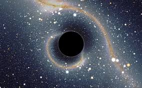
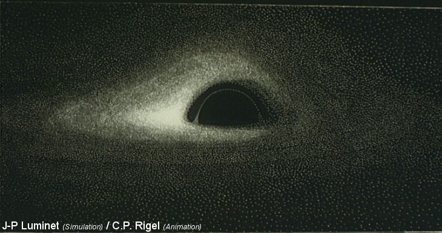

|  |
En astrophysique, un trou noir est un objet céleste si compact que l'intensité de son champ gravitationnel empêche toute forme de matière ou de rayonnement de s’en échapper. De tels objets ne peuvent ni émettre, ni diffuser la lumière et sont donc noirs, ce qui en astronomie revient à dire qu'ils sont invisibles. Dans le cadre de la relativité générale, un trou noir est défini comme une singularité gravitationnelle occultée par un horizon absolu appelé horizon des événements. Selon la physique quantique, un trou noir est susceptible de s'évaporer par l'émission d'un rayonnement de corps noir appelé rayonnement de Hawking. la matière happée par un trou noir est chauffée à des températures considérables avant d’être « engloutie » et émet une quantité importante de rayons X . |
|
Un trou noir possède une masse donnée, concentrée en un point que l’on appelle singularité gravitationnelle. |
 |
Il existe plusieurs sortes de trous noirs. Ceux qui se trouvent au centre des galaxies possèdent une masse bien plus importante pouvant atteindre plusieurs milliards de fois celle du Soleil ; on parle alors de:
Leur existence n’est, à l’heure actuelle, pas confirmée.
Si vous voulez consulter Wikipédia, cliquez ici .
Il est par définition impossible d’observer directement un trou noir. Il est cependant possible de déduire sa présence de son action gravitationnelle : soit par les effets sur les trajectoires des étoiles proches ; soit au sein des microquasars et des noyaux actifs de galaxies, où de la matière, située à proximité, tombant sur le trou noir va se trouver considérablement chauffée et émettre un fort rayonnement X. Les observations permettent ainsi de déceler l’existence d’objets massifs et de très petite taille. Les seuls objets correspondant à ces observations et entrant dans le cadre de la relativité générale sont les trous noirs.
Le concept de trou noir a émergé à la fin du XVIIIe siècle dans le cadre de la gravitation universelle d’Isaac Newton. La question était de savoir s’il existait des objets dont la masse était suffisamment grande pour que leur vitesse de libération soit plus grande que la vitesse de la lumière. Cependant, ce n’est qu’au début du XXe siècle et avec l’avènement de la relativité générale d’Albert Einstein que le concept de trou noir devient plus qu’une curiosité. En effet, peu après la publication des travaux d’Einstein, une solution de l’équation d’Einstein impliquant l’existence d’un trou noir central est publiée par Karl Schwarzschild . Les travaux fondamentaux sur les trous noirs remontent aux années 1960, précédant de peu les premières indications observationnelles solides en faveur de leur existence. La première « observation »4,5 d’un objet contenant un trou noir fut celle de la source de rayons X Cygnus X-1 par le satellite Uhuru en 1971.
Un trou noir est un objet astrophysique qui se caractérise par le fait qu’il est très difficile à observer directement (voir ci-dessous), et que sa région centrale ne peut être décrite de façon satisfaisante par les théories physiques en leur état du début du XXIe siècle, car elle abrite une singularité gravitationnelle. Cette dernière ne peut être décrite que dans le cadre d’une théorie de la gravitation quantique, manquante à ce jour. En revanche, on sait parfaitement décrire les conditions physiques qui règnent dans son voisinage immédiat, de même que son influence sur son environnement, ce qui permet de les détecter par diverses méthodes indirectes. Par ailleurs, les trous noirs sont étonnants en ce qu’ils sont décrits par un très petit nombre de paramètres. En effet, leur description, dans l’univers dans lequel nous vivons, ne dépend que de trois paramètres : la masse, la charge électrique et le moment cinétique. Tous les autres paramètres du trou noir (par exemple ses effets sur les corps environnants et leur étendue) sont fixés par ceux-ci. Par comparaison, la description d’une planète fait intervenir des centaines de paramètres (composition chimique, différenciation de ses éléments, convection, atmosphère, etc.). La raison pour laquelle un trou noir n’est décrit que par ces trois paramètres est connue depuis 1967 : c’est le théorème de calvitie démontré par Werner Israel. Celui-ci explique que les seules interactions fondamentales à longue portée étant la gravitation et l’électromagnétisme, les seules propriétés mesurables des trous noirs sont données par les paramètres décrivant ces interactions, à savoir la masse, le moment cinétique et la charge électrique.
Un trou noir possède toujours une masse non nulle. En revanche, ses deux autres caractéristiques, à savoir le moment cinétique (hérité de celui, initial, de la matière l'ayant formé, et détectable seulement par l'effet produit sur la matière environnante) et la charge électrique, peuvent en principe prendre des valeurs nulles (c’est-à-dire égales à zéro) ou non nulles. La combinaison de ces états permet de définir quatre types de trous noirs. Quand la charge électrique et le moment cinétique sont nuls, on parle de trou noir de Schwarzschild, du nom de Karl Schwarzschild qui, le premier, a mis en évidence ces objets comme solutions des équations de la relativité générale (les équations d’Einstein), en 1916. Quand la charge électrique est non nulle et le moment cinétique nul, on parle de trou noir de Reissner-Nordström. Ces trous noirs ne présentent pas d’intérêt astrophysique notable, car aucun processus connu ne permet de fabriquer un objet compact conservant durablement une charge électrique significative ; celle-ci se dissipe normalement rapidement par absorption de charges électriques opposées prises à son environnement14. Un trou noir de Reissner-Nordström est donc un objet théorique très improbable dans la nature.
Si le trou noir possède un moment cinétique, mais n’a pas de charge électrique, on parle de trou noir de Kerr, du nom du mathématicien néo-zélandais Roy Kerr qui a trouvé la formule décrivant ces objets en 1963. Contrairement aux trous noirs de Reissner-Nordström et de Schwarzschild, les trous noirs de Kerr présentent un intérêt astrophysique considérable, car les modèles de formation et d’évolution des trous noirs indiquent que ceux-ci ont tendance à absorber la matière environnante par l’intermédiaire d’un disque d’accrétion dans lequel la matière tombe en spiralant toujours dans le même sens dans le trou noir. Ainsi, la matière communique du moment cinétique au trou noir qui l’engloutit. Les trous noirs de Kerr sont donc les seuls que l’on s’attend réellement à rencontrer en astronomie. Cependant, il reste possible que des trous noirs à moment cinétique très faible, s’apparentant en pratique à des trous noirs de Schwarzschild, existent. La version électriquement chargée du trou noir de Kerr, dotée comme lui d’une rotation, est connue sous le nom de trou noir de Kerr-Newman et ne présente comme le trou noir de Reissner-Nordström ou celui de Schwarzschild que peu d’intérêt astrophysique étant donné sa très faible probabilité.
Les quatre types théoriques de trous noirs en fonction du moment cinétique (J) et de la charge électrique (Q). La masse (M) est toujours strictement positive.
L’existence des trous noirs est envisagée dès le XVIIIe siècle indépendamment par John Michell15 et Pierre-Simon de Laplace. Il s’agissait alors d’objets prédits comme suffisamment denses pour que leur vitesse de libération soit supérieure à la vitesse de la lumière — c’est-à-dire que même la lumière ne peut vaincre leur force gravitationnelle. Plutôt qu’une telle force (qui est un concept newtonien), il est plus juste de dire que la lumière subit en fait un décalage vers le rouge infini. Ce décalage vers le rouge est d’origine gravitationnelle : la lumière perd la totalité de son énergie en essayant de sortir du puits de potentiel d’un trou noir. Ce décalage vers le rouge est donc d’une nature quelque peu différente de celui dû à l’expansion de l’Univers, que l’on observe pour les galaxies lointaines et qui résulte d’une expansion d’un espace ne présentant pas de puits de potentiels très profonds. De cette caractéristique provient l’adjectif « noir », puisqu’un trou noir ne peut émettre de lumière. Ce qui est valable pour la lumière l’est aussi pour la matière : aucune particule ne peut s’échapper d’un trou noir une fois capturée par celui-ci, d’où le terme de « trou ».
Au centre d’un trou noir se situe une région dans laquelle le champ gravitationnel et les distorsions de l’espace-temps (on parle plutôt de courbure de l’espace-temps) deviennent infinis. Cette région s’appelle une singularité gravitationnelle. La description de cette région est délicate dans le cadre de la relativité générale puisque celle-ci ne peut décrire des régions où la courbure devient infinie. De plus, la relativité générale est une théorie qui ne peut pas incorporer en général des effets gravitationnels d’origine quantique. Or quand la courbure tend vers l’infini, on peut montrer que celle-ci est nécessairement sujette à des effets de nature quantique. Par conséquent, seule une théorie de la gravitation incorporant tous les effets quantiques (on parle alors de gravitation quantique) est en mesure de décrire correctement les singularités gravitationnelles.
La description d’une singularité gravitationnelle est donc pour l’heure problématique. Néanmoins, tant que celle-ci est située à l’intérieur de l'horizon du trou noir, elle ne peut influencer ce qui est à l’extérieur de cet horizon, de la même façon que de la matière située à l’intérieur de l'horizon d’un trou noir ne peut en ressortir. Ainsi, aussi mystérieuses que soient les singularités gravitationnelles, notre incapacité à les décrire, signe de l’existence de limitations de la relativité générale à décrire tous les phénomènes gravitationnels, n’empêche pas la description des trous noirs pour la partie située de notre côté de l’horizon des événements.
Si vous voulez retourner en haut de la page, cliquez ici.
Pour passer à la page suivante , cliquez ici .